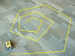
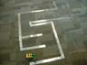

.
Click on the text links to view the .txt files then copy and paste into Notepad or some
other simple text viewing application and save as .java to be able to run them.
.
Click on the text links to view the .txt files then copy and paste into Notepad or some
other simple text viewing application and save as .java to be able to run them.
Here, you may find a small collection of the Java programs for
the RCX that we have written through the course of this research.
If you plan to use them, please give our programmers the credit
they deserve by keeping their name at the top. They worked very hard
to figure out the algorithms, code, and documentation of these programs. Thank you! See
Animations
under the Image Galleries category for examples of these programs
in action wherever you see
.
Click on the text links to view the .txt files then copy and paste into Notepad or some
other simple text viewing application and save as .java to be able to run them.
To use any of the following programs, you must download these two files. They cannot run by themselves but they are vital to the navigation in the rest of the programs. Since our goal is for intro programmers to use the RCX here at Meredith College, we had to rewrite some things so that they could understand it better. Feel free to examine the code and see how we accomplished this.
SquareThe Square program just walks the RCX in a "square". I say "square" because it is not necessarily a perfect square, but very close. Results may vary due to design, battery power, and the surface on which it is walking.
Spiral The Spiral program simply makes the RCX walk in an angular spiral moving out from the starting position. This could be used to demonstrate the Move and Sleep classes above, or it could be used as a sort of search process where the RCX is looking for objects to pick up. Click on the image to enlarge.
TableThis zip file includes all the files needed to run the Table program. The Table program allows your RCX to walk around a table without falling off with the adjustment of a couple variables. Directions for such adjustments are commented at the top of each file. NOTE: It isn't perfect because it could possibly back off of the table and it gets stuck in corners.
Maze The Maze program allows the RCX to walk through a maze of reflective tape. The light sensors pick up the light reflecting back off the tape very well so as to create a big difference between the floor and it therefore enabling the RCX to proceed easily. Please note that the RCX's ability to get around tight S-curves is not the greatest especially as the tank.
ThrowerThe Thrower program allows the RCX to walk around until it bumps into something. At that time, the third motor is signaled to turn on and fire the projectile loaded on the back in the direction of whatever it rammed.
PincherThe Pincher program allows the RCX to walk around until it bumps into something. At that time, the third motor is signaled to turn on and grab whatever it ran into, move the object, then continue on it's original path (or close to it anyways).
Venus Tennis Ball TrapThe Venus Tennis Ball Trap program instructs the RCX to walk forward until something touches the bar inside the red bin mounted on the front of the robot. When that happens, the trap door closes behind it then transports the object to another location before continuing onward. This program could easily be modified to make the robot wander around or implement the Vision Command and actually look for the tennis balls!